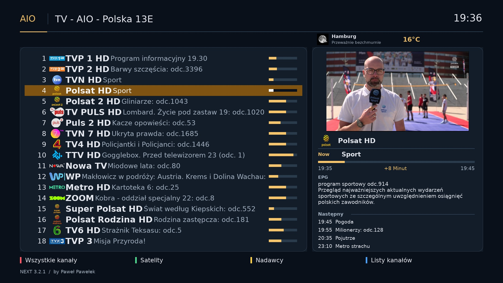
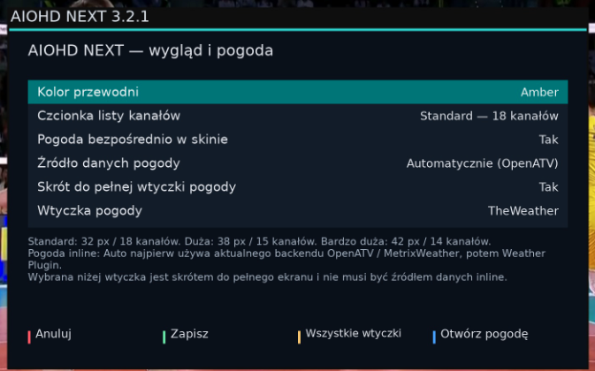
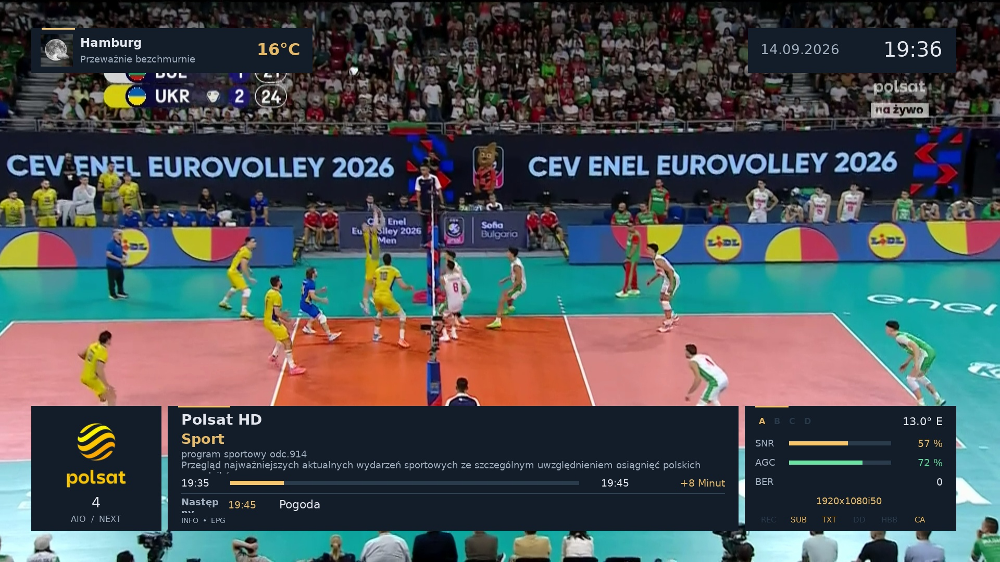
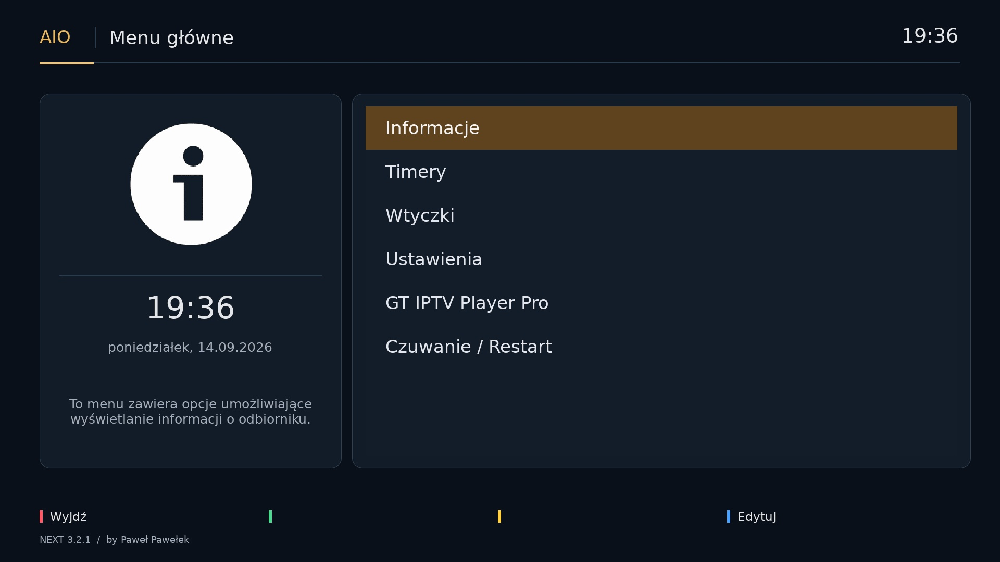
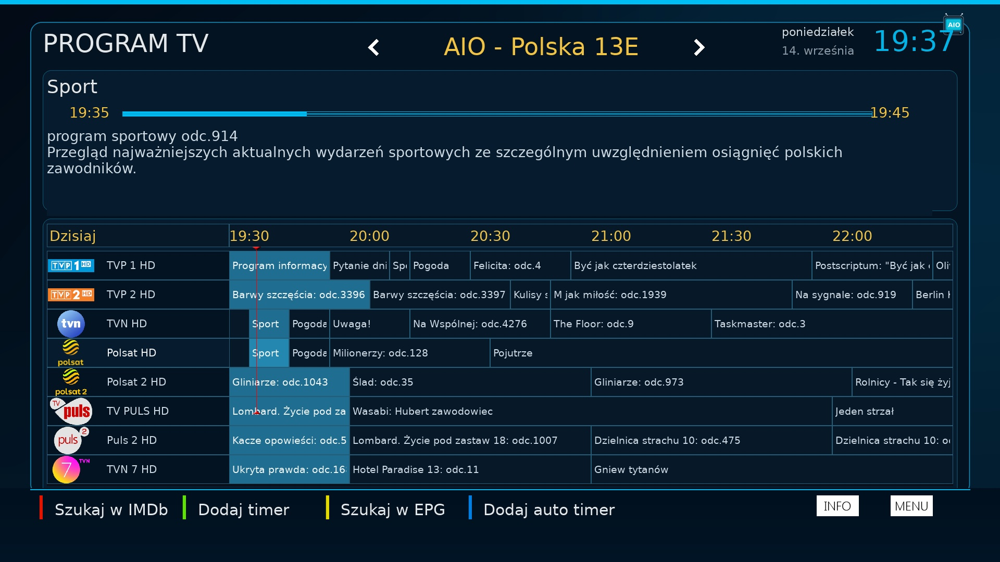
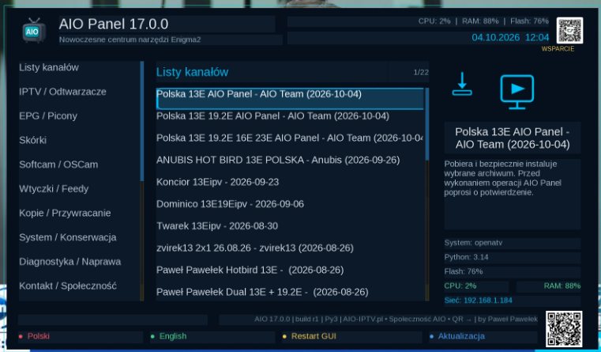

MiniTV
Podgląd obrazu TV bez opuszczania listy kanałów.
AIO TEAM • SKIN FULL HD • OPENATV / ENIGMA2
Nowoczesny skin Full HD z MiniTV, rozbudowanym EPG, opisem audycji, trzema rozmiarami listy kanałów, pogodą inline i trzema wariantami kolorystycznymi.

3.2.1-r3 • 14.09.2026Najważniejsze
Podgląd obrazu TV bez opuszczania listy kanałów.
Prawy panel pokazuje bieżący program oraz cztery kolejne pozycje EPG.
Kompaktowy ekran z tytułem, opisem, postępem i następną audycją.
Pełny opis wydarzenia w przewijanym ekranie informacji.
Ikona, miejscowość, temperatura i aktualne warunki bezpośrednio w skinie.
Aurora, Amber i Violet bez instalowania osobnych paczek skina.
Personalizacja
Pogoda • EPG • InfoBar
Galeria





Wydanie
b2c4ed0d4e8d69e745e60019639a852e2175ce8a179239c3202609791f03ea15
Instalacja
Po instalacji wybierz AIOHD w ustawieniach skina i wykonaj Restart GUI.
Najprościej: otwórz AIO Panel 17.0.0 → Skórki → AIOHD NEXT - Instalator.
Otwórz stronę AIO Panelwget -q --no-check-certificate "https://github.com/OliOli2013/AIOHD-NEXT-Skin/releases/download/3.2.1-r3/enigma2-plugin-skins-aiohd-next_3.2.1-r3_all.ipk" -O /tmp/aiohd-next.ipk && opkg install /tmp/aiohd-next.ipk && rm -f /tmp/aiohd-next.ipkPowiązane
AIOHD NEXT jest przeznaczony dla Enigma2 Python 3 i wymaga pakietu enigma2-plugin-skins-metrix-atv. Rzeczywista zgodność może zależeć od image oraz dostępnych komponentów systemu.